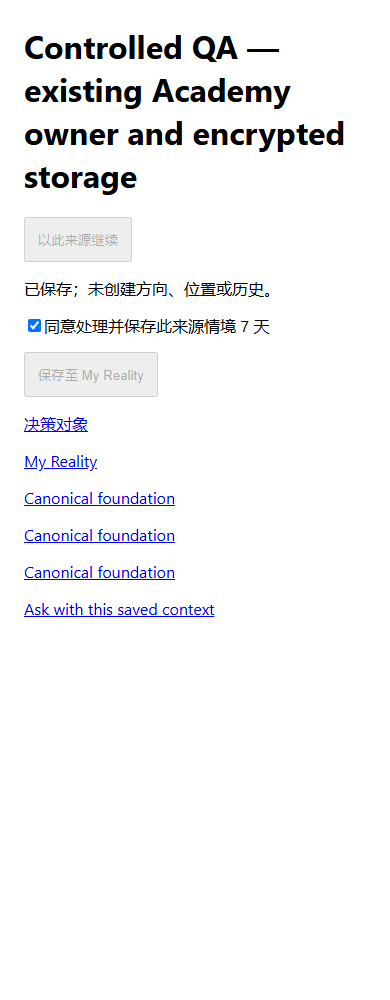
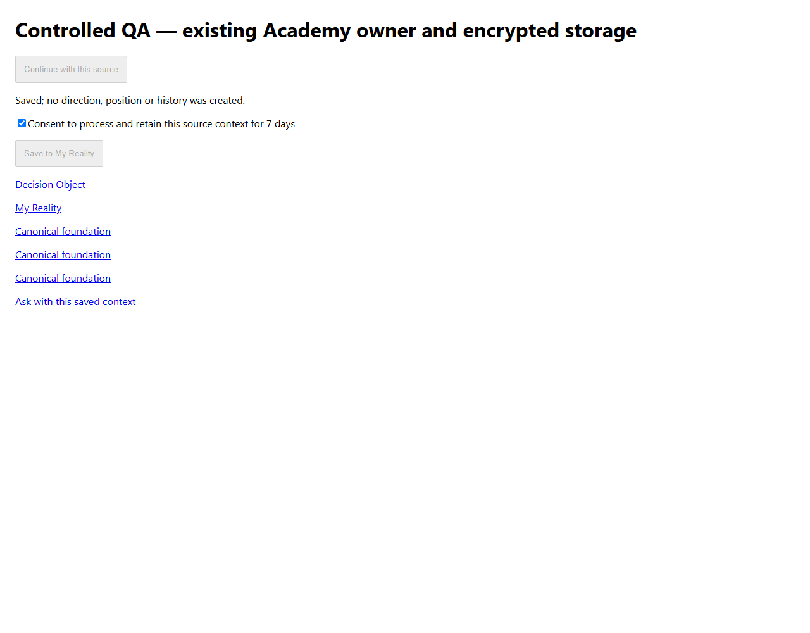

PARTIAL · provider calls 0 · 新功能未部署，未验证真实客户。既有接受与发布结论不重开。
HEAD 4b02439efc147a07de76f06dbed1275de3d09a59。新交接层复用既有 owner；方向、位置与缺失历史保持未建立。八项存储／边界测试通过；八个 Academy 组件中英尺寸测试仅为 bounded evidence。
Shared server projection now resolves selected sources and retains UNKNOWN direction/position. Source owner and account identities are never accepted from HTTP payloads.
Reports: openOwnedMethodReport; Tarot: original symbolic reading API with account and retention admission; Financial: draftApi; Appointment: appointmentRequestApi; Books: resolveSelectedArticle; Academy: navigationPublicCatalog.
CANONICAL_CUSTOMER_NAVIGATION_HANDOFF_V1 contains source identity/version, object scope, customer scope, evidence states, persistence, targets and limitations.
Direction and position remain NOT_ESTABLISHED. Relations are not inferred. Source history remains NOT_SUPPLIED, including after a handoff save.
Eight scoped tests include anonymous-private rejection, cross-account encrypted record denial and injected authority rejection. Other private adapters still need their own owner integration tests.
Existing migration 0012 and report-context AES-GCM object owner reused. ACCOUNT_CONTEXT is a metadata discriminator, not a fabricated canonical person. Save requires processing, retention and persistence consent.
Actual customer-contextual-ask API reads a same-account saved record and rejects a different account. Deterministic boundary retrieval only; personalized answering remains unimplemented. Evidence: ASK-API-CHECKS.json.
Actual accepted public catalog resolves NAV-01; missing video is explicitly unavailable. Existing Academy cards call the shared component. Eight bilingual width checks cover the actual component, not full Academy pages.
Existing account BaZi released-report cards supply their real reportId. Server resolver reuses original entitlement/read adapter. Real BaZi source-owner integration and browser journey NOT_RUN.
Saved My Reality Tarot entries expose their existing readingId. Resolver consumes the original account/retention API and preserves immutable draw. Current Tarot-owned source integration/browser journey NOT_RUN.
Saved Financial panel supplies existing draftId; saved Appointment request supplies existing appointmentRequestId. Original encrypted owners are used. Actual complete browser journeys NOT_RUN.
Existing article surface supplies its data-article-slug to the accepted article resolver. Public article does not grant full book access. Actual Book-to-Ask browser flow NOT_RUN.
TARGETED-CHECKS.json: eight actual public-owner/storage/boundary checks. ASK-API-CHECKS.json adds actual API same-account retrieval, account denial and all-network-call interception.
BROWSER-LEDGER.json: 1440,1280,390,375px, Chinese/English; actual shared widget, actual public Academy owner, existing SQLite/encrypted storage, controlled synthetic QA account. Other requested flows NOT_RUN.
Provider calls=0, cost=0, real payments=0, production migrations=0, R2 deletion=0, automatic commit/push/deploy=0. Local QA uses no production customer or credentials.
Remaining local work: private source-owner integration, actual My Reality/Ask full page journeys, missing expired/withdrawn source test coverage and established direction/position owner discovery. These are not production-authorization blockers.
Exactly one new Pages build requested. Relevant digest is scoped to actual consumed feature dependencies. Output identity and concurrency result recorded in BUILD-LEDGER.json; no second build loop.
Existing unique Master contains the R1 PARTIAL section and structured feature state. Existing closed release/Human ACCEPT results are preserved; new feature deployment/live remain NOT_RUN.
{
"currentHead": "4b02439efc147a07de76f06dbed1275de3d09a59",
"featureDependencyDigest": "dbbb06afe9e74853cbf36d432cc6a13890cca759fe5728a30b953a1f9503b0ff",
"schema": "CANONICAL_CUSTOMER_NAVIGATION_HANDOFF_V1",
"owner": "functions/customer-projection/canonical-navigation-handoff.js",
"sourceResolution": "SERVER_OWNER_ONLY",
"clientEvidenceInjection": "DENY",
"history": "NOT_SUPPLIED unless actual owner history exists; this implementation does not reconstruct it",
"direction": "NOT_ESTABLISHED",
"position": "NOT_ESTABLISHED",
"productionActivation": "DEFAULT_DISABLED",
"states": "PARTIAL; UNKNOWN; NOT_ESTABLISHED"
}{
"currentHead": "4b02439efc147a07de76f06dbed1275de3d09a59",
"featureDependencyDigest": "dbbb06afe9e74853cbf36d432cc6a13890cca759fe5728a30b953a1f9503b0ff",
"items": [
{
"family": "BAZI",
"owner": "openOwnedMethodReport",
"consumer": "Account released BaZi report",
"source": "PARTIAL",
"browser": "NOT_RUN",
"firstMissingRequirement": "Complete current owned-source browser journey and source-owner integration test"
},
{
"family": "TAROT",
"owner": "symbolicReadingApi (original account/retention admission)",
"consumer": "My Reality saved Tarot source",
"source": "PARTIAL",
"browser": "NOT_RUN",
"firstMissingRequirement": "Complete current owned-source browser journey and source-owner integration test"
},
{
"family": "ACADEMY",
"owner": "navigationPublicCatalog",
"consumer": "Navigation Academy",
"source": "PARTIAL",
"browser": "PASS_BOUNDED",
"firstMissingRequirement": "Full Academy page journey, beyond isolated actual component"
},
{
"family": "FINANCIAL",
"owner": "draftApi",
"consumer": "saved Financial draft panel",
"source": "PARTIAL",
"browser": "NOT_RUN",
"firstMissingRequirement": "Complete current owned-source browser journey and source-owner integration test"
},
{
"family": "APPOINTMENT",
"owner": "appointmentRequestApi",
"consumer": "saved request card",
"source": "PARTIAL",
"browser": "NOT_RUN",
"firstMissingRequirement": "Complete current owned-source browser journey and source-owner integration test"
},
{
"family": "BOOKS",
"owner": "resolveSelectedArticle",
"consumer": "article surface",
"source": "PARTIAL",
"browser": "NOT_RUN",
"firstMissingRequirement": "Complete current owned-source browser journey and source-owner integration test"
}
]
}{
"currentHead": "4b02439efc147a07de76f06dbed1275de3d09a59",
"featureDependencyDigest": "dbbb06afe9e74853cbf36d432cc6a13890cca759fe5728a30b953a1f9503b0ff",
"state": "PASS_LOCAL",
"scope": "Eight checks; public Academy plus controlled SQLite accounts; not every private adapter",
"evidence": "TARGETED-CHECKS.json",
"crossAccount": "DENY",
"anonymousPrivate": "DENY",
"productionState": "NOT_RUN"
}{
"currentHead": "4b02439efc147a07de76f06dbed1275de3d09a59",
"featureDependencyDigest": "dbbb06afe9e74853cbf36d432cc6a13890cca759fe5728a30b953a1f9503b0ff",
"state": "PASS_LOCAL",
"owner": "functions/report-context/report-context-store.js",
"migration": "Existing 0012; no new production migration executed",
"encryption": "AES-GCM existing owner, actual local SQLite migration",
"retentionDays": [
7,
30,
90,
365
],
"accountContext": "Explicit ACCOUNT_CONTEXT metadata discriminator; not canonical person",
"sourceVersion": "Rechecked on reopen",
"gaps": [
"Expired-record negative test",
"Source withdrawal tests across all source owners",
"Real My Reality page reopening"
],
"providerCalls": 0
}{
"currentHead": "4b02439efc147a07de76f06dbed1275de3d09a59",
"featureDependencyDigest": "dbbb06afe9e74853cbf36d432cc6a13890cca759fe5728a30b953a1f9503b0ff",
"state": "PARTIAL",
"consumer": "functions/api/customer-contextual-ask.js",
"browserSelector": "navigationRecordId",
"mode": "DETERMINISTIC_SOURCE_AND_BOUNDARY_RETRIEVAL",
"newQuestionPersonalizedAnswer": "NOT_IMPLEMENTED",
"paidAsk": "Existing branch retained",
"gaps": [
"Targeted API test of saved-record branch",
"Actual Books to Ask and saved source to Ask browser flows"
]
}{
"results": [
{
"width": 1440,
"locale": "en",
"state": "PASS_BOUNDED",
"scope": "ACTUAL_WIDGET_REAL_ACADEMY_OWNER_EXISTING_ENCRYPTED_SQLITE_STORAGE_CONTROLLED_QA_ACCOUNT",
"errors": [],
"overflow": false
},
{
"width": 1440,
"locale": "zh",
"state": "PASS_BOUNDED",
"scope": "ACTUAL_WIDGET_REAL_ACADEMY_OWNER_EXISTING_ENCRYPTED_SQLITE_STORAGE_CONTROLLED_QA_ACCOUNT",
"errors": [],
"overflow": false
},
{
"width": 1280,
"locale": "en",
"state": "PASS_BOUNDED",
"scope": "ACTUAL_WIDGET_REAL_ACADEMY_OWNER_EXISTING_ENCRYPTED_SQLITE_STORAGE_CONTROLLED_QA_ACCOUNT",
"errors": [],
"overflow": false
},
{
"width": 1280,
"locale": "zh",
"state": "PASS_BOUNDED",
"scope": "ACTUAL_WIDGET_REAL_ACADEMY_OWNER_EXISTING_ENCRYPTED_SQLITE_STORAGE_CONTROLLED_QA_ACCOUNT",
"errors": [],
"overflow": false
},
{
"width": 390,
"locale": "en",
"state": "PASS_BOUNDED",
"scope": "ACTUAL_WIDGET_REAL_ACADEMY_OWNER_EXISTING_ENCRYPTED_SQLITE_STORAGE_CONTROLLED_QA_ACCOUNT",
"errors": [],
"overflow": false
},
{
"width": 390,
"locale": "zh",
"state": "PASS_BOUNDED",
"scope": "ACTUAL_WIDGET_REAL_ACADEMY_OWNER_EXISTING_ENCRYPTED_SQLITE_STORAGE_CONTROLLED_QA_ACCOUNT",
"errors": [],
"overflow": false
},
{
"width": 375,
"locale": "en",
"state": "PASS_BOUNDED",
"scope": "ACTUAL_WIDGET_REAL_ACADEMY_OWNER_EXISTING_ENCRYPTED_SQLITE_STORAGE_CONTROLLED_QA_ACCOUNT",
"errors": [],
"overflow": false
},
{
"width": 375,
"locale": "zh",
"state": "PASS_BOUNDED",
"scope": "ACTUAL_WIDGET_REAL_ACADEMY_OWNER_EXISTING_ENCRYPTED_SQLITE_STORAGE_CONTROLLED_QA_ACCOUNT",
"errors": [],
"overflow": false
}
],
"otherFourCustomerFlows": "NOT_RUN",
"providerCalls": 0
}{
"currentHead": "4b02439efc147a07de76f06dbed1275de3d09a59",
"featureDependencyDigest": "dbbb06afe9e74853cbf36d432cc6a13890cca759fe5728a30b953a1f9503b0ff",
"verdict": "PARTIAL",
"local": "PARTIAL",
"build": "RUNNING",
"deployment": "NOT_DEPLOYED_NEW_FEATURE",
"live": "NOT_RUN_NEW_FEATURE",
"oldRelease": "CLOSED_UNCHANGED",
"providerCalls": 0,
"providerCostUSD": 0,
"realPayments": 0,
"R2Deletion": 0,
"productionMigration": 0,
"automaticCommitPushDeploy": 0,
"tests": 8,
"browser": "8 PASS_BOUNDED isolated Academy widget; remaining product journeys NOT_RUN",
"nextExecutableWork": [
"Complete source-owner integration tests for BaZi, Tarot, Financial, Appointment and Books",
"Verify actual My Reality and contextual Ask consumers through browser",
"Review established direction/position owner availability; do not invent output"
]
}

{
"state": "PASS_LOCAL",
"scope": "ACTUAL_API_SAVED_ACADEMY_RECORD_CONTROLLED_ACCOUNT",
"sameAccountStatus": 200,
"crossAccountStatus": 404,
"networkCalls": 0,
"providerCalls": 0,
"personalizedAnswer": "NOT_IMPLEMENTED"
}{
"at": "2026-10-11T00:50:13.948Z",
"scope": "FEATURE_ACTUAL_ESBUILD_TRANSITIVE_DEPENDENCIES; LOCAL_PAGES_PUBLICATION_OUTPUT",
"buildAttempts": 1,
"state": "PASS_BUILD",
"FEATURE_DEPENDENCY_DIGEST": "dbbb06afe9e74853cbf36d432cc6a13890cca759fe5728a30b953a1f9503b0ff",
"relevantMutations": [],
"outputs": [
{
"path": ".pages-output/_worker.js",
"sha256": "d95f1468db94d929943b606d13c8474cb0963d07aad645bc36de2279f0163b1f",
"bytes": 16755828
},
{
"path": ".pages-output/_routes.json",
"sha256": "d266398b90fe6d1ce4355a5a4c95cc30a41246d501c3fe0d97bd2854ea7f491e",
"bytes": 289
}
],
"publicationBoundary": "PASS; 11637 files; Worker gzip 3126398 bytes",
"newFeatureDeployed": false,
"wholeWorktreeFreshnessUsed": false,
"fullPagesInputDigest": "NOT_ESTABLISHED; feature dependency digest is narrower than all production build inputs"
}